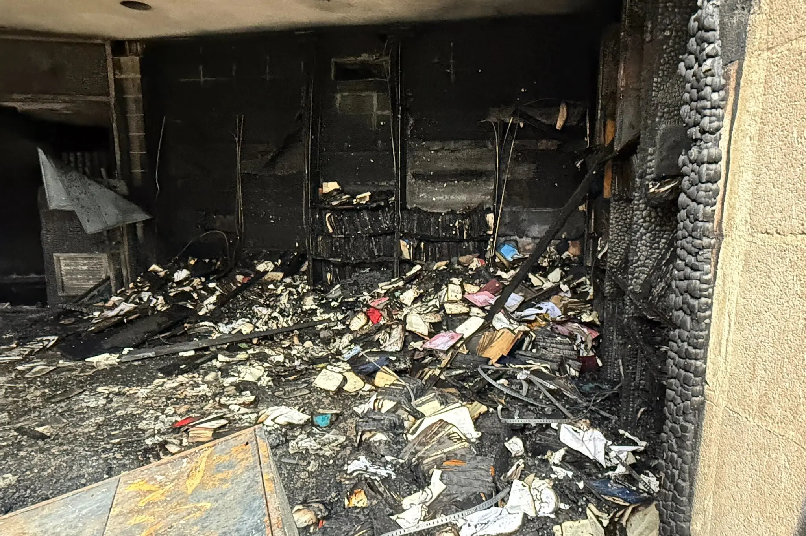

Mississippi's oldest synagogue attacked with fire.
Mississippi officials arrested a suspect Saturday and charged them with arson after a fire was set early that morning at Beth Israel, Jackson's only synagogue.
The suspect was taken into custody Saturday evening at a nearby hospital, where they were being treated for non-life-threatening burns, according to officials.
The fire broke out around 3 a.m. No injuries were reported.
Beth Israel has previously been targeted. Decades ago, the synagogue was bombed by the Ku Klux Klan while the congregation was advocating for racial integration.
Officials said the fire caused extensive damage to the building, including:
- The synagogue library, where two Torahs were destroyed
- Significant smoke damage throughout the building
- The main sanctuary, where five Torahs were damaged
In the aftermath of the fire, several places of worship in Jackson have offered to share space with Beth Israel while repairs are underway. Congregation leaders said they expect to resume services as early as next week.